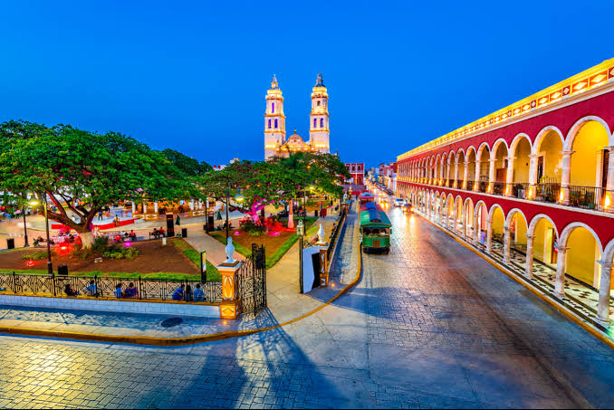
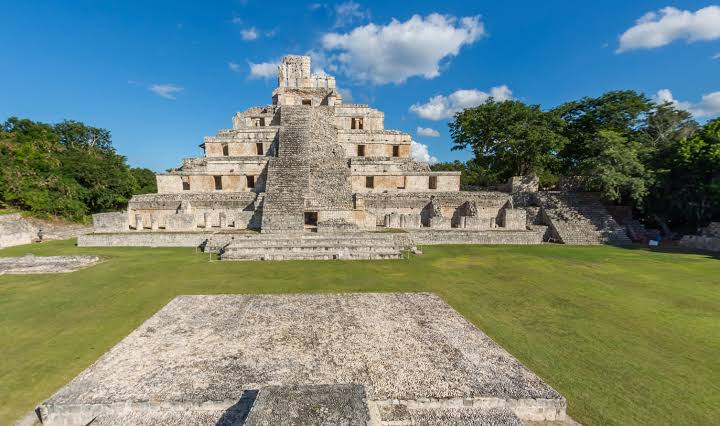
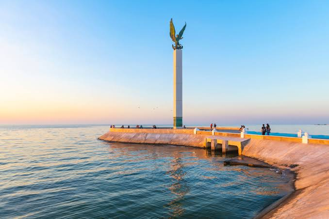

Centro Histórico

Recorre sus calles coloniales y disfruta de sus murallas.
Campeche es uno de los estados con mayor riqueza cultural y arquitectónica de México.

Recorre sus calles coloniales y disfruta de sus murallas.

Uno de los sitios arqueológicos más importantes del sureste mexicano.

Ideal para caminar al atardecer y disfrutar de la vista al mar.